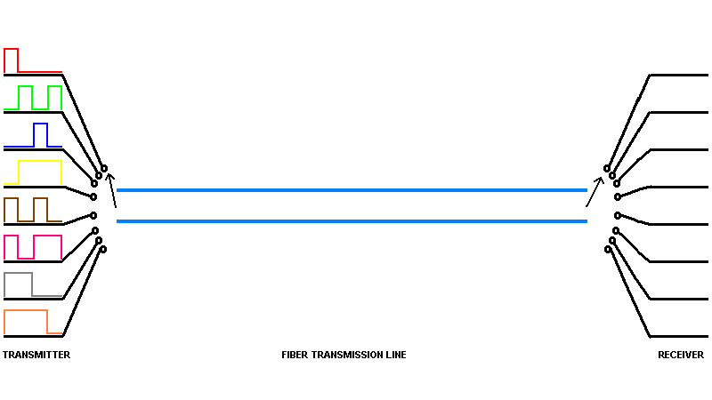
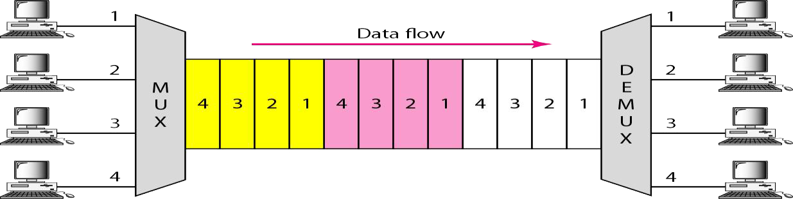
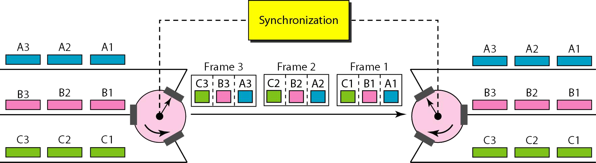
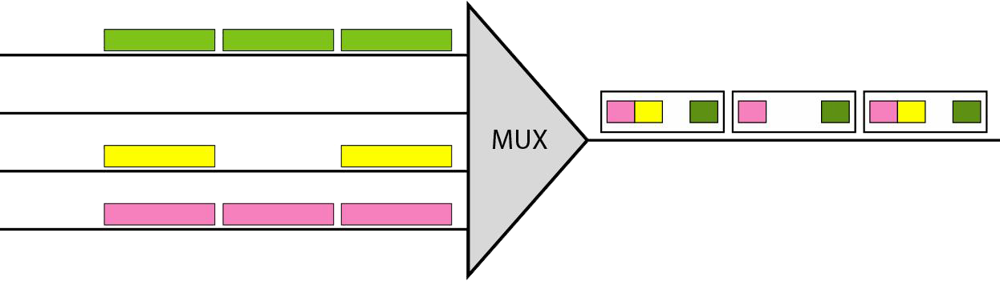
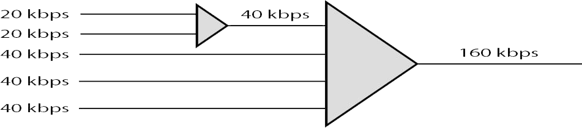
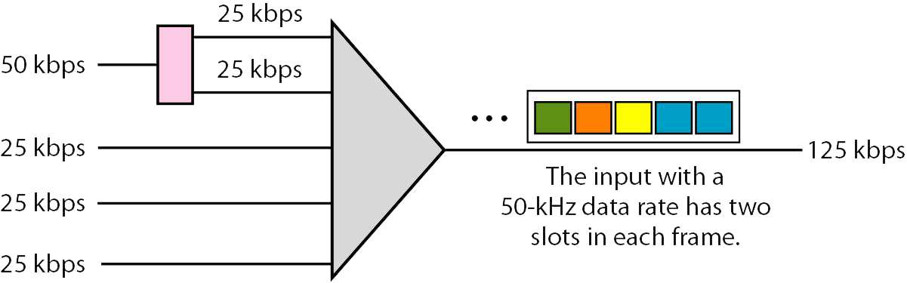
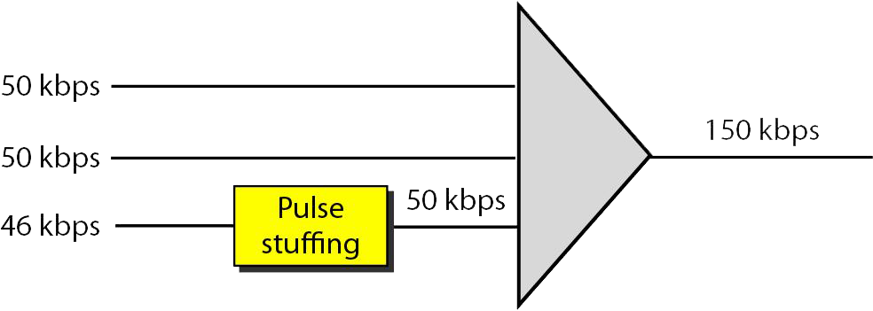
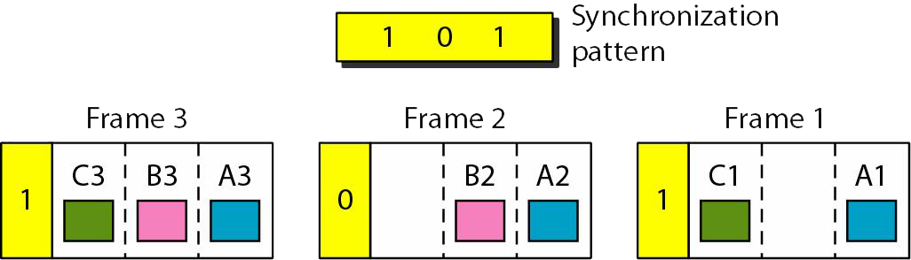

Definición
En TDM síncrona, cada conexión de entrada tiene una asignación en la salida aunque no se envíen datos.
Figura 11. TDM síncrona.

Características
Ranuras de tiempo y trama.
El flujo de datos de cada conexión de entra se divide en unidades, donde cada unidad ocupa una ranura de tiempo de entrada. Una unidad puede ser un bits, un carácter o un bloque de datos.
En TDM síncrona, una trama se introduce una ronda de unidades de datos de cada conexión de entrada. Si se tiene n conexiones, la trama se divide en ranuras de tiempo y se asigna cada unidad a una ranura, una para cada línea de entrada.
Figura 12. TDM.

Entrelazado.
TDM se puede visualizar como dos conmutadores de rápida rotación, uno en un lado de la multiplexación y otro en el de la demultiplexación. Los conmutadores se sincronizan y rotan a la misma velocidad, pero en direcciones opuestas. En el lado del demultiplexador, cuando el conmutador se abre en frente de una conexión, esa conexión tiene la oportunidad de enviar una unidad por el camino. Este proceso se denomina entrelazado. En el lado de la demultiplexación, cuando el conmutador se abre en frente de una conexión, esa conexión tiene la oportunidad de recibir una unidad del camino.
Figura 13. Entrelazado.

Ranuras vacías.
La multiplexación síncrona TDM no es tan eficiente como podría ser. Si un emisor no tiene datos que enviar, la ranura correspondiente en la trama de salida esta vacía.
Figura 14. Ranuras vacías.

Gestión de la tasa de datos.
Un problema con TDM es como manejar una disparidad en la tasa de datos de entrada. En todo lo que se ha tratado hasta el momento se ha asumido que las tasas de datos de todas las líneas de entradas son iguales. Sin embargo si las tasas no son iguales, se pueden emplear tres estrategias: Multiplexación multinivel, asignación de múltiples ranuras e inserción de pulsos.
- Multiplexación multinivel, es una técnica utilizada cuando la tasa de datos de una línea de entrada es múltiplo de otras.
Figura 15. Multiplexación multinivel.

- Asignación de múltiples ranuras, en algunas ocasiones es mas eficiente asignar mas de una ranura en una trama a una única línea de entrada. Por ejemplo se podría tener una línea de entrada que tiene una tasa de datos que es múltiplo de otra entrada.
Figura 16. Multiplexación con múltiples ranuras.

- Inserción de pulsos, en algunas ocasiones las tasas de bits de los emisores no son múltiplos enteros unos de otros. Por tanto, ninguna de las dos técnicas anteriores se pueden aplicar. La única solución es hacer que la tasa de datos de entrada mas alta sea la tasa de daos dominante y a continuación se añaden bits extras a las líneas de entrada con tasas mas bajas, esto incrementa sus tasas.
Figura 17. Inserción de pulsos.

Sincronización de tramas.
La implementación de TDM no es tan sencilla como la FDM. La sincronización entre el multiplexor y el demultiplexor, si el multiplexor y el demultiplexor no están sincronizados, un bits de un canal puede ser recibido por un canal equivocado. Por esta razón se añade uno o mas bits de sincronización al comienzo de cada trama. Estos bits, denominados bits de tramado, siguen un patrón, trama a trama, que permite al demultiplexor sincronizarse con el flujo entrante para así poder separar las ranuras de tiempo de forma adecuada.
Figura 18. Bits de tramado.
